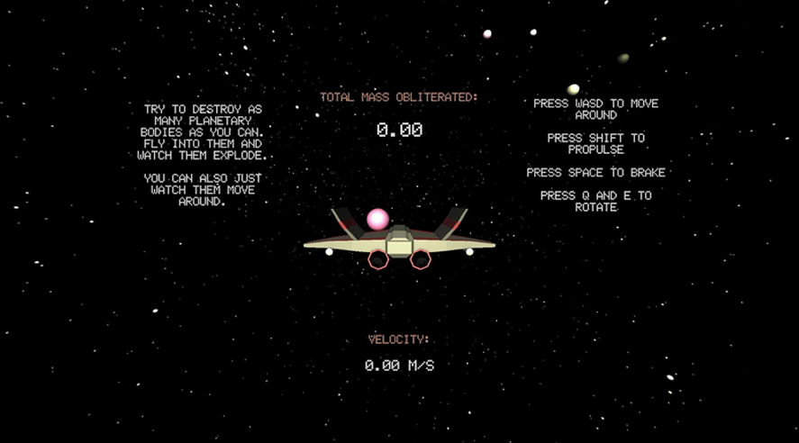
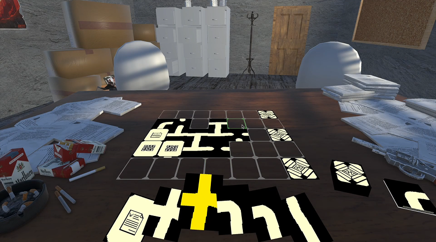
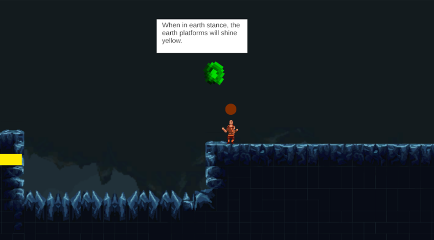
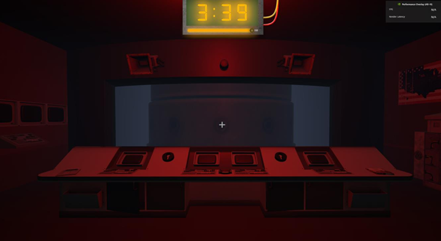
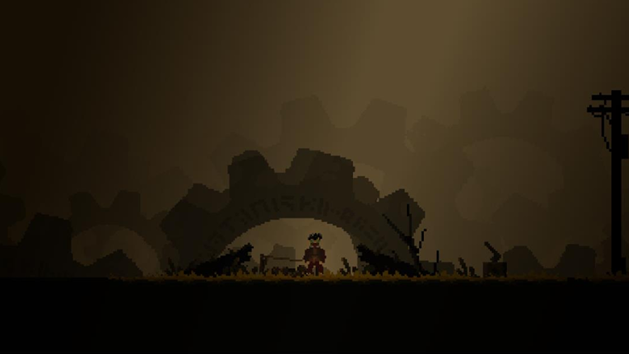

Video Games
All Projects Has Been Developed Using Unity
Planet Crusher

GitHub LinkPlanet Crusher is a game where you control a spaceship that destroys matter.
I developed everything myself except the spaceship asset and the music.
Ministry of Truth

GitHub LinkMinistry Of Truth is a card game where the player must create paths to reach certain cards.
While developing this game I was primarily involved with research and design. I also programmed the audio system.
Project Element

A small metroidvania game designed to train the balance of kids with SNHL disorder using a WII-board.
My personal role while developing this was the lead programmer.
M.A.D. Protocol

A 3D Escape Room game where the player is an American missile operator that must activate an atomic bomb, before being hit by an atomic missile themselves.
My personal role while developing this game was the project lead and a lead visual designer.
Carbon Clouds

A 2D movement based platformer game where the player must traverse a steampunk wasteland.
My personal role while developing this game was the project lead and a visual designer.